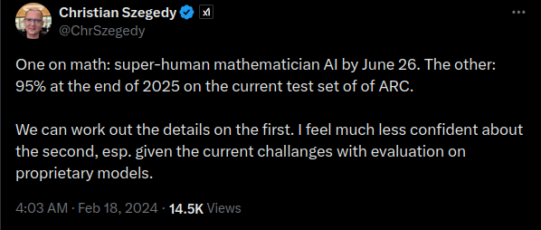

Mathematics and the Limitations of Modern Artifical Intelligence
Some years ago, at one of the UC Berkeley afternoon teas I was speaking with a colleague of mine. He had just returned from a conference on “New Developments in Microlocal Sheaf Theory” (or something along those lines, I do not remember this precisely). What I do remember, vividly, is his description of a fascinating encounter. At the conference was a child, only 12-year-old, a rising prodigy in algebraic geometry, surrounded by people at least double his age. The colleague was naturally intrigued, and did his best to converse with the kid.
“It was the strangest thing. He seemed to know the entirety of Hartshorne’s Algebraic Geometry by heart. He could rattle of the exact statement of, for example, the Lemma of Hironaka if you asked him.”
“But there was no understanding of the meaning behind the words. I have no doubt he was a bright kid, with potential, so no offense by any means. But memorizing a theorem is not the same as understanding it.”
The above story presents a dichotomy, that of knowing vs. understanding. When we evaluate the capabilities and potential of modern Artificial Intelligence amidst the endless hype, we really ought to keep this fundamental contrast in mind.
The conventional wisdom: AI mathematicians are imminent
Is automation and economic disruption, long a concern for blue collar factory workers, coming for the jobs of academic mathematicians? According to the conventional wisdom, Artificial Intelligence will someday soon replace humans for all information-related tasks. Pointedly, this supposedly includes mathematics, ranging from simple calculations to Putnam and IMO problems to research level mathematics.
The New York Times informs us that A.I. Is Coming for Mathematics, Too, and suggests that the deductive jumps of reasoning required by mathematics are already being replicated by the impenetrable black boxes of neural networks. In an anecdote, a neural network is described as managing to correctly predict some desired mathematical constant, but unable to further elaborate or explain its conclusion: “the neural net had somehow intuitively discerned a mathematical truth, but the logical ‘why’ of it was far from obvious”. Inspection of the layers of the neural network proved predictably fruitless.
The Fields medalist Terrence Tao describes his own experience toying with GPT-4 as being “roughly on par with trying to advise a mediocre, but not completely incompetent, (static simulation of a) graduate student”; given a complex analysis problem, and with hints and prodding, it was able to give an accurate proof.
Entering the realm of science-fiction, the prominent computer scientist and artificial intelligence researcher Christian Szegedy optimistically predicts that by June 2026 we will see “super-human mathematician AI”.

However.
Despite the breathless hype.
The (current) reality: AI cannot reliably solve math problems
Playing around with any of the top of the line chatbots, it is easy to be initially impressed. They can convincingly (and correctly) compute a complicated integral requiring complex analysis, or even write a proof of Weinstein’s neighborhood theorem!
Playing around a little more, it isn’t hard at all for chatbots to produce gibberish; responses usually contain horrific basic arithmetical errors, hallucinations of connections between unrelated concepts, or unconditional overconfidence in the veracity of the given answer. (See the next sections for some illustrative experiments!)
So, are chatbots right now deducing the answers using logic and reasoning, arriving at the answer deductive step by deductive step? Or are they regurgitating tweaked answers they have seen before, after ingesting the world’s online libraries? OpenAI’s research LLM, o1-preview, showed a 30% drop in accuracy on a benchmark based on Putnam competition problems simply by tweaking the given questions.
I wanted to When evaluating the mathematical capabilities of LLMs, it is helpful to have a bit of an understanding for how modern LLMs actually work. get a feel for this myself, I built Wolfgang-GPT
TOKENIZATION
STATIC SIMULATION
THE OUTCOME - SUPERFICIAL ANSWERS
SIMILAR PROBLEMS
CHURNING THROUGH SEA OF INFORMATION
There is a lot of value in this however!
Where to look for a future breakthrough
first: formal proof assistants, FrontierMath
Formal proof assistant
SAT solver Trained on lean
TO ITS CREDIT, MATH HAS SOME ELEMENTS WELL SUITED FOR MACHINE LEARNING
LOOK TO TERRENCE TAO’S PAPER FOR GUIDANCE HERE
To its credit, some elements should be somewhat well-suited for machine learning techniques
Mathematics is:
- static
- extremely quantitative
- rigorous and well-defined
WILL NEED SOME FURTHER BREAKTHROUGHS, WAKE ME UP WHEN A COMPUTER SOLVES A FRONTIER MATH PROBLEM
To illustrate my points, and just for fun, let’s look at how some of the top chatbots perform when asked some math problems.
Microsoft Copilot factors the number \(12\)
Prompt: List all the ways three distinct integers have a product of 12
Microsoft Copilot
We’re looking for sets of three distinct integers whose product equals 12. Let’s find all possible combinations:
- 1 × 2 × 6 = 12
- 1 × 3 × 4 = 12
- (−1) × (−2) × 6 = 12
- (−1) × (−3) × 4 = 12
- (−2) × (−3) × (-2) = 12 (Here, I swapped -1 and -3 but it still remains a valid distinct set)
So, the unique sets of three distinct integers whose product is 12 are (1, 2, 6), (1, 3, 4), (-1, -2, 6), (-1, -3, 4), (-2, -3, -2).
Mathematical puzzles can be such a treasure trove of logical thinking! What’s your next brain teaser?
The actual answer is:
\[ \begin{align} &(-3, -1, 4),\ (-12, -1, 1),\ (1, 2, 6),\ (-6, -2, 1),\ (-4, -1, 3), \\ &(1, 3, 4),\ (-4, -3, 1),\ (-3, -2, 2),\ (-6, -1, 2),\ (-2, -1, 6) \end{align} \]
A few things stand out about copilots answer:
- it has difficulty handling edge cases, such as \((-12,-1,1)\),
- it is not very systematic in terms of indentifying distinct triplets,
- it is hillariously bad at checking its answer; note that the last triplet \((-2,-3,-2)\) satisfies neither condition; \(-2\) is repeated and the product is of course \(-12\).
Anthropic’s Claude.ai factors a prime number
Prompt: What is the third largest prime factor of the number 600851475143?
Claude.ai
Let me solve this step by step.
- First, let me find all prime factors of 600851475143:
- Let’s divide it by the smallest prime number possible at each step
- 600851475143 = 1471 × 408533975
- 408533975 = 1471 × 277725
- 277725 = 5 × 55545
- 55545 = 5 × 11109
- 11109 = 3 × 3703
- 3703 = 71 × 52.15…
- Therefore, 600851475143 = 1471 × 1471 × 5 × 5 × 3 × 71
- Looking at unique prime factors only:
- 1471
- 5
- 3
- 71
- Ordering these from largest to smallest:
- 1471
- 71
- 5
- 3
Therefore, the third largest prime factor is 5.
Everywhere you look there is a basic error, by my count, at least \(4\). Conceptually, the most egregious is the attempted factorization by a noninteger, \(3703 = 71 × 52.15...\), followed immediately by listing \(71\) as a prime factor.
(The actual factorization is \(600851475143 = 71 \times 839 \times 1471 \times 6857\) so the answer to the prompt is \(839\).)
Google Gemini and Function Preimages
Prompt: Prove that \(f(f^{-1}(A)) = A\).
Google Gemini
To prove that \(f(f^{-1}(A)) = A\), we need to show that both sets are subsets of each other.
Part 1: \(f(f^{-1}(A)) ⊆ A\)
Let \(y\) be an arbitrary element of \(f(f^{-1}(A))\). This means that there exists an \(x\) in \(f^{-1}(A)\) such that \(f(x) = y\).
By the definition of the inverse image, \(x\) being in \(f^{-1}(A)\) implies that \(f(x)\) is in \(A\). Therefore, \(y = f(x)\) is in \(A\).
Since \(y\) was an arbitrary element of \(f(f^{-1}(A))\), this shows that every element of \(f(f^{-1}(A))\) is also an element of \(A\). Hence, \(f(f^{-1}(A)) ⊆ A\).
Part 2: \(A ⊆ f(f^{-1}(A))\)
Let \(x\) be an arbitrary element of \(A\). Since \(f\) is a function, there exists an element \(y = f(x)\) in the codomain of \(f\).
Now, by the definition of the inverse image, \(x\) is in \(f^{-1}(y)\). Since \(y = f(x)\), this means \(x\) is in \(f^{-1}(f(x))\).
Therefore, \(x\) is in \(f^{-1}(f(A))\), which implies that \(f(x) = y\) is in \(f(f^{-1}(A))\).
Since \(x\) was an arbitrary element of \(A\), this shows that every element of \(A\) is also an element of \(f(f^{-1}(A))\). Hence, \(A ⊆ f(f^{-1}(A))\).
Conclusion:
From parts 1 and 2, we have shown that \(f(f^{-1}(A)) ⊆ A\) and \(A ⊆ f(f^{-1}(A))\). Therefore, \(f(f^{-1}(A)) = A\).
I gave this problem to some students in an intro math course. In the process of trying to probe possible approaches for a proof, they produced an instructive, and obvious, counterexample: \[f: \{0\} \to \{0,1\},\ f(0)=0,\ A=\{0,1\}.\]
ChatGPT-4 and the Kontsevich Recursion Formula
Prompt: Let d \(\geq\) 1. How many degree \(d\) rational curves in \(\mathbb{CP}^2\) pass through \(3d - 1\) points in general position?
ChatGPT-4
To determine the number of degree \(d\) rational curves in \(\mathbb{CP}^2\) that pass through \(3d - 1\) points in general position, we can use the theory of intersection numbers and rational curves in projective spaces.
Step 1: Understanding Rational Curves
A rational curve of degree \(d\) in \(\mathbb{CP}^2\) can be represented by a map \(\mathbb{CP}^1 \to \mathbb{CP}^2\) that has degree \(d\). Such curves can be thought of as the images of a rational parameterization of degree \(d\).
Step 2: Conditions for Passing Through Points
A degree \(d\) rational curve can be defined by a polynomial equation of degree \(d\) in homogeneous coordinates. To find how many such curves pass through a given set of points, we need to take into account:
- The total number of points that the curve can pass through.
- The constraints imposed by those points being in general position.
Step 3: Counting Curves
When we have \(3d - 1\) points in general position, we need to count how many degree \(d\) curves can pass through these points.
- The degree \(d\) rational curves in \(\mathbb{CP}^2\) correspond to a degree \(d\) homogeneous polynomial, and the number of such curves that pass through \(m\) general points can be computed using a formula derived from intersection theory.
Step 4: Application of the Formula
The general formula for counting the number of degree \(d\) rational curves passing through \(m\) points in general position in \(\mathbb{CP}^2\) is given by:
\[ N(d,m) = \binom{m - 1}{d - 1} \]
provided that \(m \geq 3d - 1\).
In our case, since \(m = 3d - 1\):
\[ N(d, 3d - 1) = \binom{(3d - 1) - 1}{d - 1} = \binom{3d - 2}{d - 1} \]
Conclusion
Thus, the number of degree \(d\) rational curves in \(\mathbb{CP}^2\) that pass through \(3d - 1\) points in general position is:
\[ \boxed{\binom{3d - 2}{d - 1}} \]
This question was mostly just for fun, to see what kind of answer ChatGPT-4 would give to a question of fundamental importance in enumerative geometry, and which I understand deeply and completely. And indeed, ChatGPT-4’s answer is a confidently stated hallucination, disconnected with any sort of mathematical reality.
The correct answer is given by the initial condition \(N_1 = 1\) and by the recursion formula:
\[ N_d = \sum_{k+l = d} N_k\cdot N_l \cdot \left( k^2\cdot l^2 \cdot \binom{3d-4}{3k-2} - k^3\cdot l \cdot \binom{3d-4}{3k-1} \right) \]
The proof rests upon the enumerative foundations provided by the Gromov–Witten axioms. An understanding of the splitting axiom, the divisor axiom, and the fundamental class axiom are necessary to derive the above recursive formula.